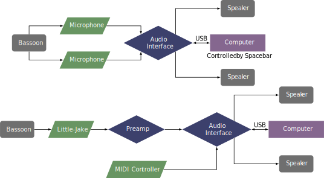

This piece was composed in 2006 and was premiered by Dana Jessen on March 6, 2006. The piece can be obtained on the composer's website.
The notes at the beginning of the piece indicate that two microphones are required: one close to the bell and one close to the middle of the bassoon. This is because the beginning of the piece records the bassoon's low B, which is not picked up adequately by a microphone at the middle of the bassoon. Alternatively, an electric bocal can be used as a single input. The bassoon signal goes into an audio interface before going to the computer. The patch by default is controlled by the space bar or by sending a value of 127 on MIDI controller 64.
Two possible setups for the piece are shown here. The first setup shows the use of two microphones with another performer controlling the computer with the spacebar. The second setup shows an electric bocal with the patch being controlled by a MIDI controller. 
A screenshot of the Max patch is shown below. From this point, the performer needs to turn on the audio processing either from the microphone button in the top left corner or the power button on the bottom right of the screen. To initialize all the settings the performer should also push the ``R'' key on the keyboard. The patch is now ready to begin with either the MIDI controller advancing cues or someone at the computer pushing the space bar. Levels of individual effects can be adjusted with the sliders if desired.
From a technical standpoint, this piece is well within the range of an undergraduate student. The range is not extreme, and rhythmically it's not too complex. There are some multiphonics in the piece, but fingerings have been supplied in the score. The electronic difficulty is not very hard either. The music has indications of when the MIDI pedal or space bar should be pressed. Some precision is required in triggering the cues, as the patch frequently records the bassoon sound and manipulates it. Overall, this piece is applicable for undergraduate students and would perhaps be a good candidate for a student's first piece with Max/MSP.
This piece has a very accessible style, and would fit well on any recital program.
©2024 by Benjamin Bradshaw
Logo ©2024 by Hannah Bradshaw